从七组建筑到完整校园
核验日期 2026-11-12。建筑身份、几何精度与启用状态分别记录。此为游戏前期资产，不是测绘或竣工模型。
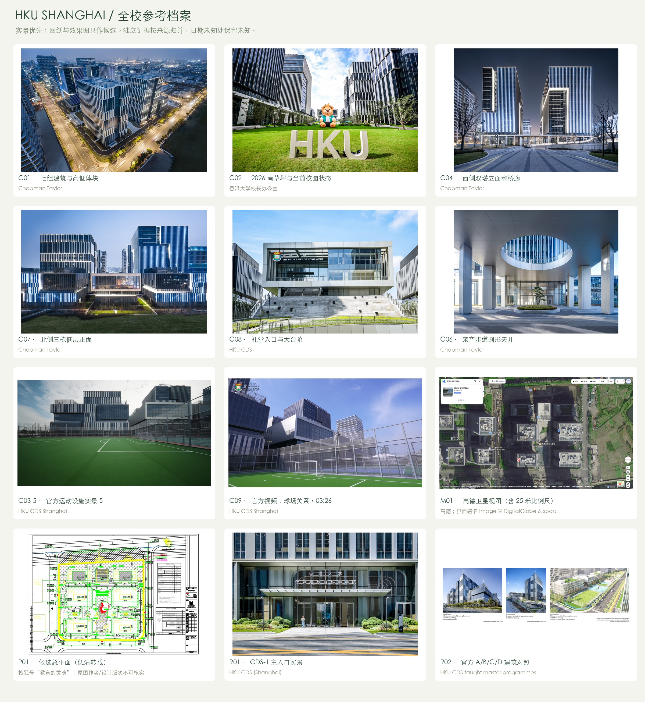
C01 · 七组建筑与高低体块

Chapman Taylor / 新闻原图 2025-01-17；项目页标 Completed 2026，拍摄日未知 / 设计方实景航拍
身份：设计方项目明确关联 HKU；与官方 R02 的礼堂、两排楼群和卫星对应
支持：四栋高层、北侧低层组群；西侧大框窗与东侧分段立面；屋面和环路
疑点：非正射；校方改造前；当前各栋内部用途不能由外观推出。A04/N04 为同图。
原始页面 · 原图/视频C02 · 2026 南草坪与当前校园状态
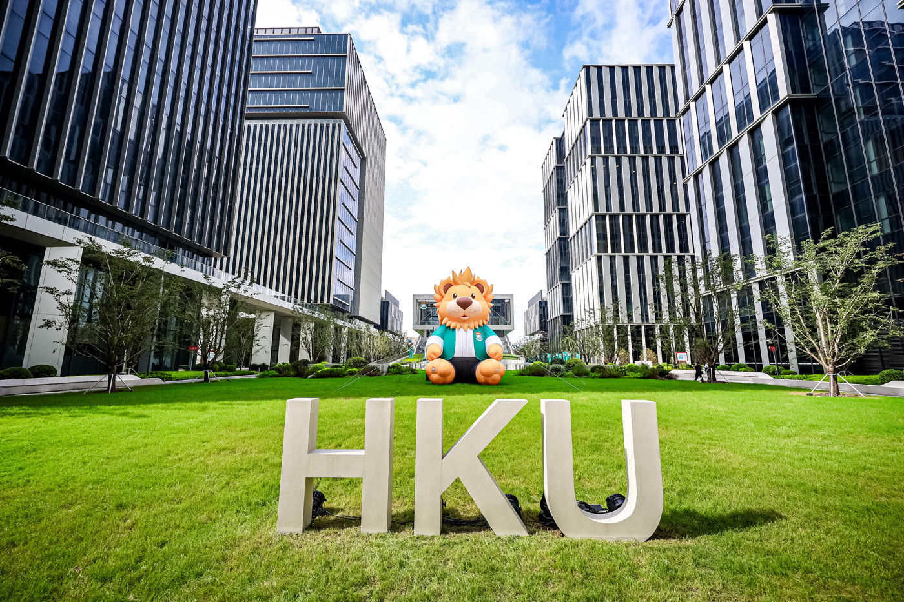
香港大学校长办公室 / 活动 2026-08-30；检索到新闻为2026-09，页面抽取未显示确切日 / 校方实景照片及新闻
身份：新闻明确张江基地二期；建筑排列与 C01/R02 对应
支持：南草坪、HKU 立体字、东西立面；正文确认3号/5号楼用途
疑点：活动狮子及人群不作为永久建筑；正文楼号与 P01 位置的映射仍是推断。
原始页面 · 原图/视频C03-1 · 官方运动设施实景 1
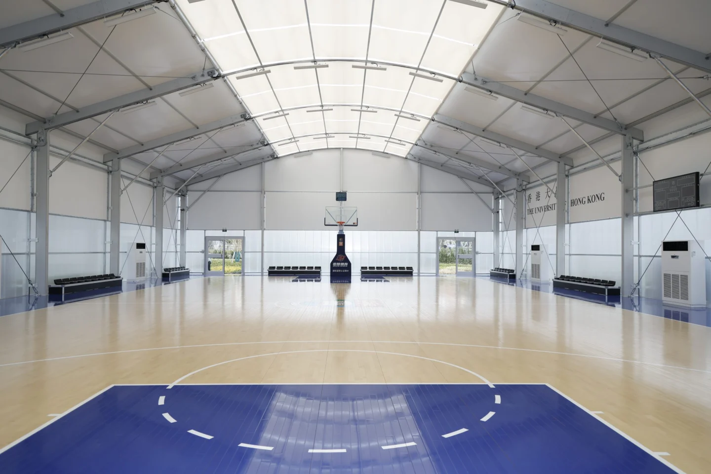
HKU CDS Shanghai / 上传路径2026/09；拍摄日未提供 / 校方实景照片
身份：上海 Facilities Sports 栏目；室外图中的北侧低层框窗与 R02/C07 对应
支持：围网、绿色场地、门架；sports-1 支持封闭的轻型双坡顶篮球馆类型
疑点：体育馆只有内景：外立面、尺寸、位置保守暂定；不从室内图推定总平面。
原始页面 · 原图/视频C03-3 · 官方运动设施实景 3
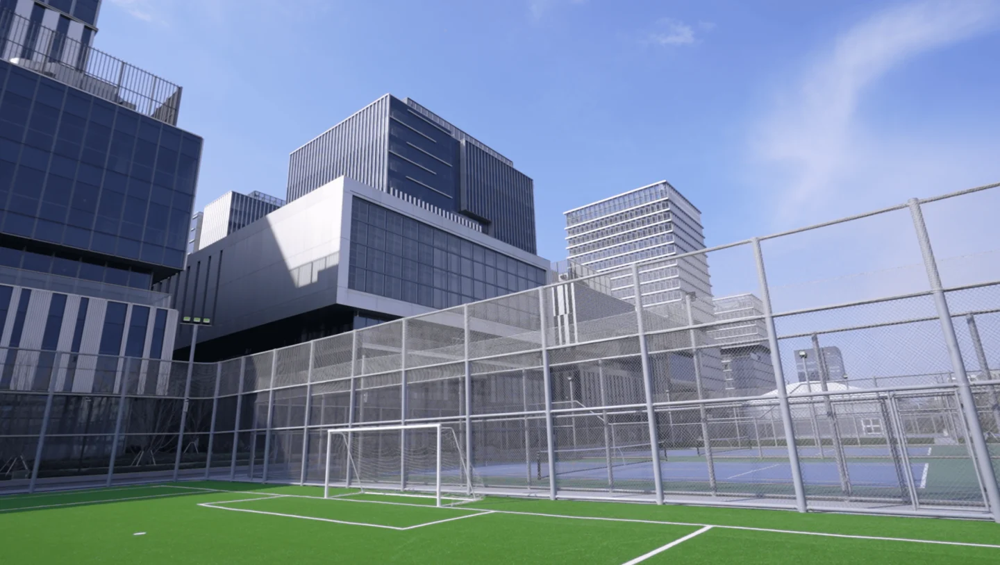
HKU CDS Shanghai / 上传路径2026/09；拍摄日未提供 / 校方实景照片
身份：上海 Facilities Sports 栏目；室外图中的北侧低层框窗与 R02/C07 对应
支持：围网、绿色场地、门架；sports-1 支持封闭的轻型双坡顶篮球馆类型
疑点：体育馆只有内景：外立面、尺寸、位置保守暂定；不从室内图推定总平面。
原始页面 · 原图/视频C03-4 · 官方运动设施实景 4
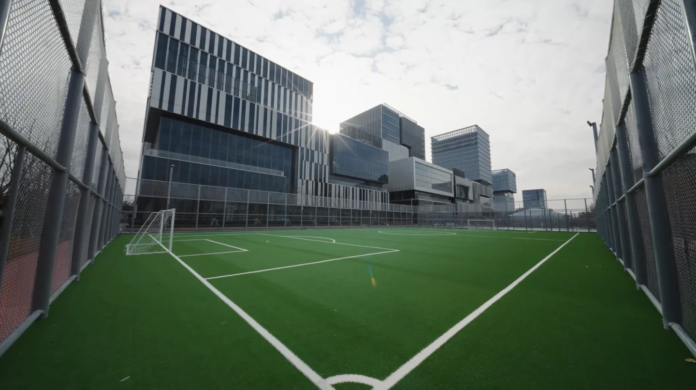
HKU CDS Shanghai / 上传路径2026/09；拍摄日未提供 / 校方实景照片
身份：上海 Facilities Sports 栏目；室外图中的北侧低层框窗与 R02/C07 对应
支持：围网、绿色场地、门架；sports-1 支持封闭的轻型双坡顶篮球馆类型
疑点：体育馆只有内景：外立面、尺寸、位置保守暂定；不从室内图推定总平面。
原始页面 · 原图/视频C03-5 · 官方运动设施实景 5
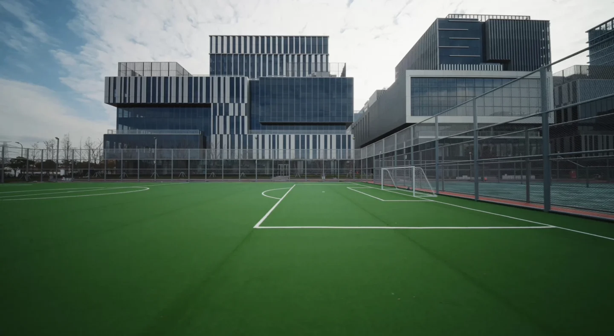
HKU CDS Shanghai / 上传路径2026/09；拍摄日未提供 / 校方实景照片
身份：上海 Facilities Sports 栏目；室外图中的北侧低层框窗与 R02/C07 对应
支持：围网、绿色场地、门架；sports-1 支持封闭的轻型双坡顶篮球馆类型
疑点：体育馆只有内景：外立面、尺寸、位置保守暂定；不从室内图推定总平面。
原始页面 · 原图/视频C04 · 西侧双塔立面和桥廊

Chapman Taylor / 文件名Jan2025；精确拍摄日未知 / 实景照片
身份：与航拍中西侧两栋高层的大框窗轮廓对应
支持：连续细竖杆；错位的大框玻璃开窗；底部架空层和连接步道
疑点：背侧延续规律为推断；窗格数、层数、突出深度暂定。A02/N03重复。
原始页面 · 原图/视频C05 · 中央轴线与下沉景观
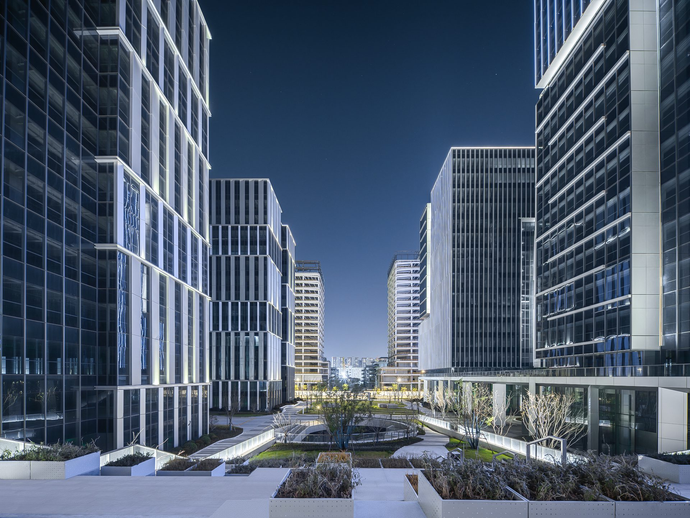
Chapman Taylor / 2025年完工图片；拍摄日未知 / 实景照片
身份：东西两类立面与 C01 对应，中轴空间吻合卫星
支持：中心景观轴、层叠铺装、架空步道和低层公共空间
疑点：照片早于HKU改造；没有把旧铺装逐块作为当前测绘。A03/N02重复。
原始页面 · 原图/视频C06 · 架空步道圆形天井
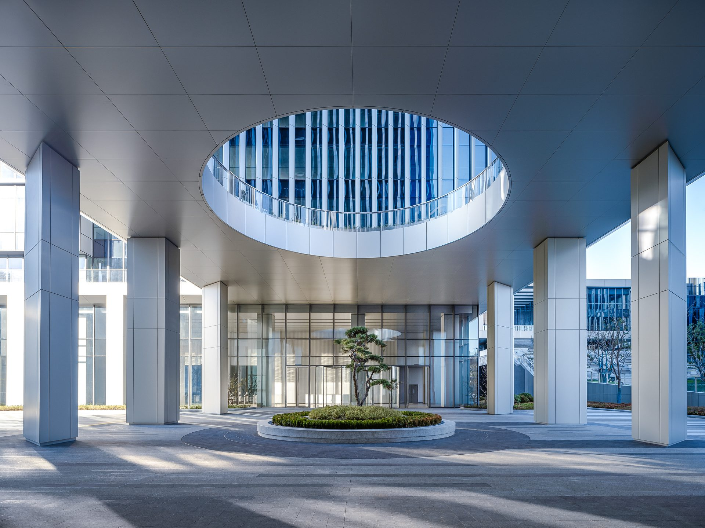
Chapman Taylor / 日期未明，项目图库实景 / 实景照片
身份：背景相邻幕墙与项目图库关联，楼栋局部归属为推断
支持：白色支柱、可见圆形顶洞与树池
疑点：只确认特征存在，具体落点与节点尺度缺少精确地图；模型位置可改。A08/N09重复。
原始页面 · 原图/视频C07 · 北侧三栋低层正面

Chapman Taylor / 2025年完工图；拍摄日未知 / 实景照片
身份：中央礼堂和两侧配套体块与 R02 标注 A/B 对应
支持：中央较窄大框礼堂，两侧宽体低层，后方两类高层
疑点：图中无可读5/6/7门牌，楼号对应依候选图纸。A06/N06重复。
原始页面 · 原图/视频C08 · 礼堂入口与大台阶
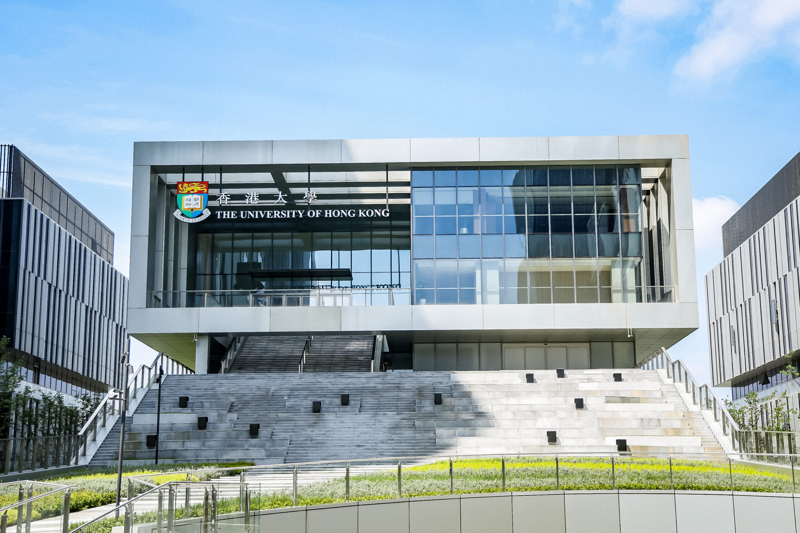
HKU CDS / 上传路径2026/07，拍摄日未知 / 校方实景照片
身份：R02 A Auditorium；校名及大框窗直接对应
支持：大台阶、中央分隔、平台、门厅与白色宽框
疑点：入口尺寸与标高估计；该台阶不属于CDS-1。
原始页面 · 原图/视频C09 · 官方视频：球场关系，03:26
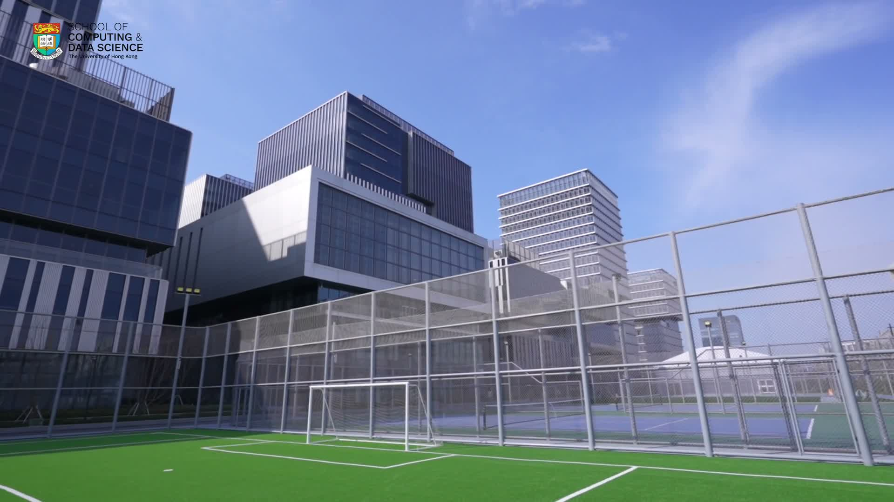
HKU CDS Shanghai / 上传路径2026/10，画面日期未知 / 视频帧 03:26
身份：画面与 C03-3 北侧大框、绿场和网球场对应
支持：蓝色场地在绿场旁，围网与后方低层建筑
疑点：与C03视角相似，不将相似/连续帧算新增独立建筑证据；球场数与尺度未测量。
原始页面 · 原图/视频P01 · 候选总平面（低清转载）
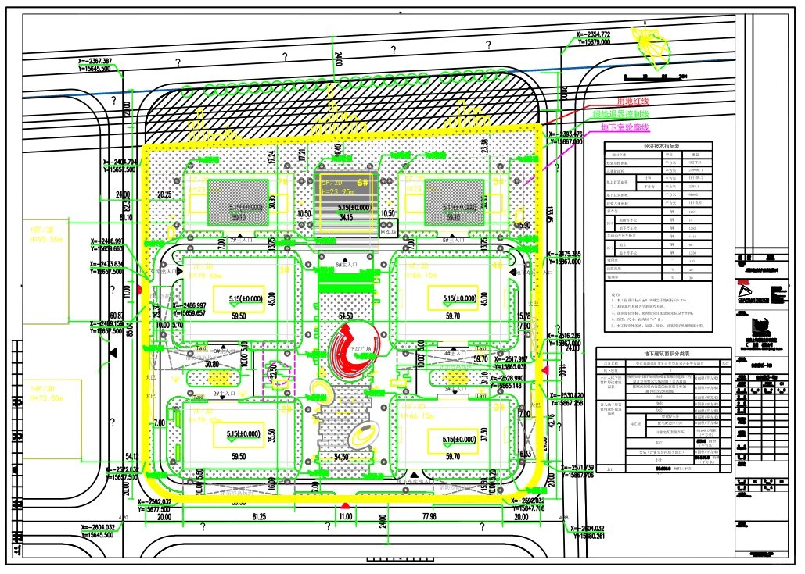
搜狐号“教育的灵魂”；原图作者/设计版次不可核实 / 转载 2025-10-20；图纸原日期不明 / 低清规划/设计总平面转载
身份：与 R02 礼堂、双排塔楼和中央下沉广场组合对应；右列中部 4# 为候选定位。
支持：可辨 4# 框旁约 59.70 × 45.00、14F/3D、H66.15；作为可改的原型参数起点。
疑点：不作为竣工图或已测定尺寸；数值可能是包络/规划高度，需原版图纸或测量校准；取约 ±20% 工作容差。
原始页面 · 原图/视频M01 · 高德卫星视图（含 25 米比例尺）
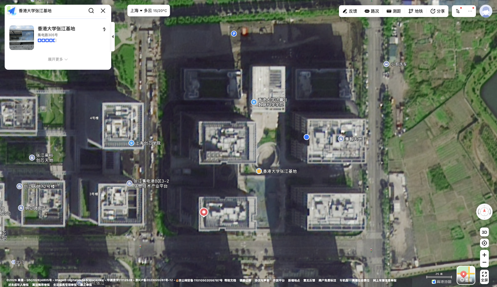
高德；界面署名 Image © DigitalGlobe & spaceview / 访问 2026-11-12；影像拍摄日期未公开 / 在线卫星影像界面截图
身份：校园礼堂、圆形下沉空间与两排高层和 R02/R04 对应；POI 标点本身不作为楼栋身份依据。
支持：总体轮廓与相邻关系。25 m 标尺约 86 px；目标屋面横向约 200 px，对应约 58 m，纵向约 150 px 对应约 44 m，仅作粗核对。
疑点：屋顶偏移、投影、边界识别与截图像素引入约 ±10 m 粗估误差；不据此判楼层/内部。POI 显示集电路 305 号，与官网入口地址不同，未强行合并。西侧“4号楼”标签属于邻园，不等于 CDS-1。
原始页面 · 原图/视频U01 · 用户补充卫星截图

用户提供；底图平台未明确 / 接收 2026-11-12；影像时间未知 / 用户提供的卫星截图
身份：与 M01 地物和 R02 校园组合对应；未用图钉或定位蓝点判定 CDS-1。
支持：两排楼栋、礼堂、下沉空间与目标屋面凹入轮廓。
疑点：没有比例尺、原页面 URL 与拍摄日期；仅交叉核对，不能独立测量。
原始页面 · 原图/视频R01 · CDS-1 主入口实景

HKU CDS (Shanghai) / 页面未标发布日期；路径含 2026/09，不等于拍摄日期 / 实景照片
身份：Facilities 的 CDS-1 栏目；右侧导视牌可读 CDS-1；入口中文校名可见。
支持：双层高玻璃门厅、薄平雨棚、中央旋转门和两侧平开门、两侧植物、浅门槛。
疑点：只有入口局部，不证明整栋层数、背立面或绝对尺寸。
原始页面 · 原图/视频R02 · 官方 A/B/C/D 建筑对照

HKU CDS taught master programmes / 页面未标发布日期；文件路径 2025/12；图内标 Construction completed (April 2025) / 两幅实景照片 + 一幅规划效果图的官方拼图
身份：两张实景中的 C 明确标 CDS Main Building；结合 R01 入口形态、T02 楼号以及礼堂相对位置识别 CDS-1。
支持：主体长方体、中部内凹玻璃带、宽窄交替竖向构件、横向分段、与 A 礼堂/B 配套体块关系。
疑点：右图是效果图，不能当作已建成场地或实测地图；C 与 CDS-1 的关联是交叉核对结果。
原始页面 · 原图/视频